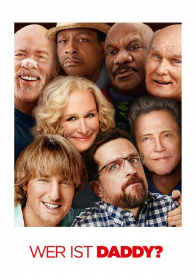
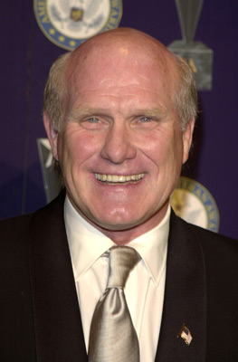
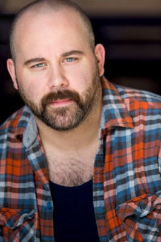
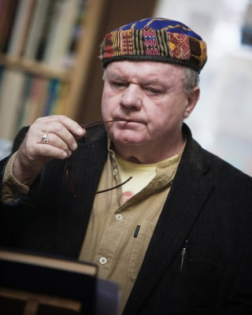
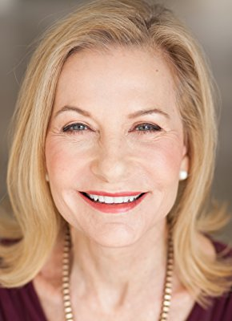
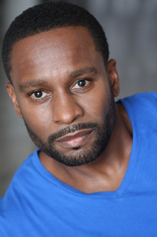
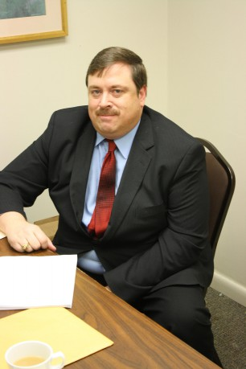

#9417 Wer ist Daddy?
Alternativ: Father Figures
 
 IMDB-Wertung: 5.4 / 10
IMDB-Wertung: 5.4 / 10  Metascore: 22
Metascore: 22 
Das eher ungleiche Zwillingsbruder-Paar Kyle und Peter muss mit großem Schrecken feststellen, dass ihre Mutter sie jahrelang belogen hat, was ihren leiblichen Vater angeht: Eigentlich dachten die beiden, dass dieser schon lange tot sei, doch nun erfahren sie auf einmal, dass ihr Vater noch immer am Leben ist. Es gibt jedoch ein Problem bei der Sache: Weder ihre Mutter noch die Brüder wissen, welcher der zahlreichen verflossenen Liebhaber ihrer Mutter denn nun ihr Vater ist, denn theoretisch kämen dafür eine ganze Menge Männer in Frage. Deshalb begeben sich Kyle und Peter kurzentschlossen auf einen Road-Trip quer durch die Vereinigten Staaten, um die potentiellen Väter abzuklappern und herauszufinden, bei welchem von ihnen es sich um ihren wahren Erzeuger handelt.
Jahr: 2017
Dauer: 112 Minuten
FSK: 12
Land: USA Studio: Warner Bros.Tonspuren: DD5.1 - ,
Untertitel: Deutsch,
Auflösung: 1080p (1920x800) Größe: 7649 MB
Genre: Komödie
Regisseur: Lawrence Sher
Drehbuch: Justin Malen
Soundtrack: Rob Simonsen
Darsteller:
 Ed Helms als Peter Reynolds
Ed Helms als Peter Reynolds Retta als Annie
Retta als Annie- Zachary Haven als Ethan
- Mary Grill als Katherine
 Glenn Close als Helen
Glenn Close als Helen Ann McKenzie als Sheila
Ann McKenzie als Sheila Owen Wilson als Kyle Reynolds
Owen Wilson als Kyle Reynolds- Jessica Gomes als Kaylani
 Harry Shearer als Gene
Harry Shearer als Gene- Sarah Skeist als Pretty Flight Attendant
-  Terry Bradshaw als Terry Bradshaw
- Debra Stipe als Karen Bradshaw
 Ving Rhames als Rod Hamilton
Ving Rhames als Rod Hamilton J.K. Simmons als Roland Hunt
J.K. Simmons als Roland Hunt June Squibb als Mrs. Hunt
June Squibb als Mrs. Hunt Robert Pralgo als Ferrari Owner
Robert Pralgo als Ferrari Owner- Katt Williams als Hitchhiker
-  Robert Walker Branchaud als Officer #1
 Andrew Wilson als Hotel Desk Clerk
Andrew Wilson als Hotel Desk Clerk- Katie Aselton als Sarah O'Callaghan
- Ryan Cartwright als Liam O'Callaghan
 Ryan Gaul als Sean O'Callaghan
Ryan Gaul als Sean O'Callaghan- Taylor Treadwell als Kelly
-  Jack McGee als Kevin O'Callaghan
- Jim France als Father McManus
- Ali Wong als Ali
 Christopher Walken als Dr. Walter Tinkler
Christopher Walken als Dr. Walter Tinkler- Chase Steven Anderson als Security Guard (Jimmy) (uncredited)
- Skyell Bella als Car Dealership Girl (uncredited)
- Tamila Bilalova als Terry Bradshaw's fan (uncredited)
- Kathi Binkley als Dr. Tinkler's Wife (uncredited)
- Nick Canning als Car Dealership Patron (uncredited)
-  Lucie Carroll als Irish Wake Attendee (uncredited)
- Massiel Checo als Car Dealership Patron (uncredited)
-  Kendrick Cross als Firefighter Dad (uncredited)
 Christopher De Stefano als Sports Autograph Collector (uncredited)
Christopher De Stefano als Sports Autograph Collector (uncredited)- Douglas DeLisle als Bradshaw Motors Salesman (uncredited)
- Alexander G. Eckert als Young Kyle (uncredited)
- Rachel Eggleston als Elizabeth (uncredited)
- Ely Feldman als Autograph Seeker (uncredited)
- Frenchi Firecracker als Car Dealership Salesman Miami (uncredited)
- Hunter Flanagan als Evan (uncredited)
- Garrett Forge als Shoeshine Dad (uncredited)
- Joseph Giambrone als Dealership Autograph Fan #3 (uncredited)
 Eric Goins als Construction Worker Dad (uncredited)
Eric Goins als Construction Worker Dad (uncredited) Brian Huskey als Joel (uncredited)
Brian Huskey als Joel (uncredited)-  Perry Johnson als Father (uncredited)
- Milton James Jones als Dealership Patron (uncredited)
- Scott Christopher Kelly als Pooping Father (uncredited)
- Marcelle LeBlanc als Schoolgirl (uncredited)
Datei: X:\2017(N-Z)\Wer ist Daddy (2017, FSK12, 1920x800).mkv seit 30.08.2018
Festplatte: HD 2017(A-Z)-2018(A-F)
 Es gibt insgesamt 170 Filme in der Gruppe '2017(N-Z)'
Es gibt insgesamt 170 Filme in der Gruppe '2017(N-Z)'